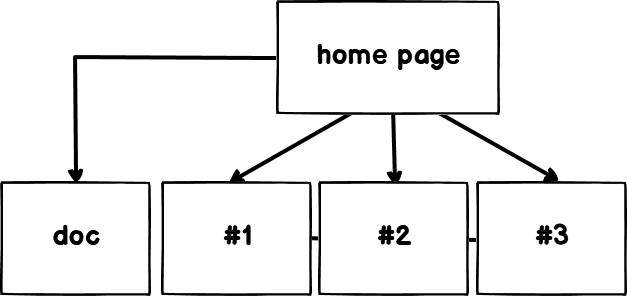
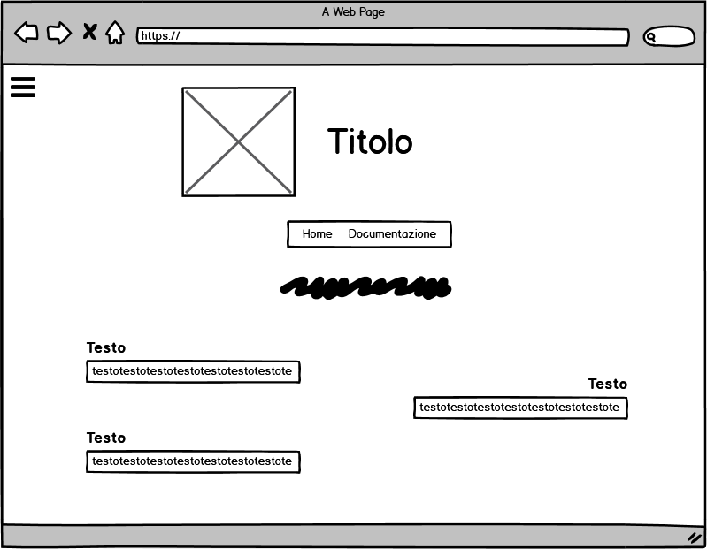
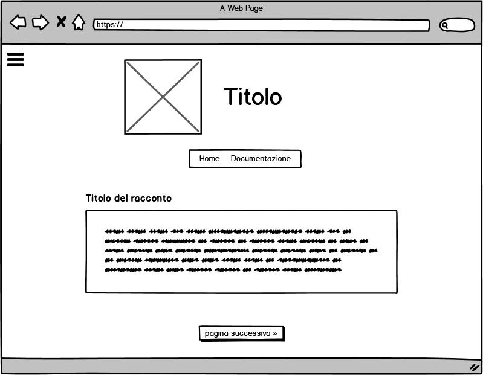
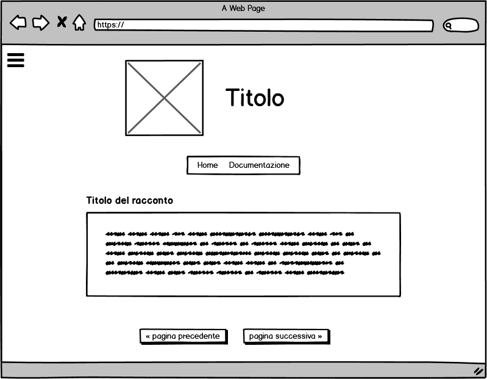
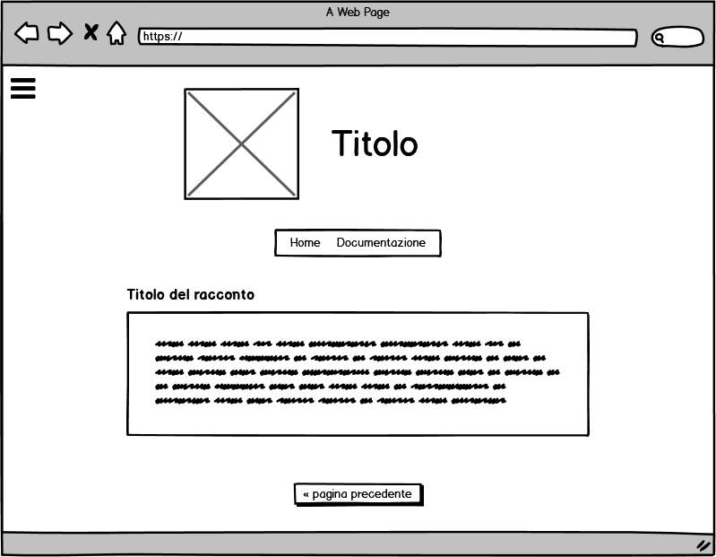

ABSTRACT
Obiettivo del mio sito web è appassionare gli utenti alla lettura di racconti online, spesso sottovalutata e/o messa in ombra da altre attività, dimostrando come anche un momento di relax quale la pausa caffè possa essere proficuo e costituire uno spunto di riflessione. Attraverso la lettura di storie semplici e volutamente brevi, tali da richiedere non più di qualche minuto a racconto, esso si rivolge a chiunque apprezzi la lettura e, stufo di perdersi tra le pagine di siti che offrono lo stesso servizio, possa ottimizzare il suo tempo e trovare rapidamente ciò che meglio si adatta alle sue esigenze.
PROJECT MANAGEMENT
1. BENCHMARKING
Obiettivi
L'obiettivo di “x” è avvicinare quanti più utenti possibili alla lettura: nella frenesia della quotidianità, si dovrebbe imparare ad utilizzare in maniera costruttiva il proprio tempo libero.
Target utente
Il sito si rivolge fondamentalmente a chi ha già una pregressa passione per la lettura e, di conseguenza, riesca a farne scaturire uno spunto di riflessione.
Competitors
Vi sono numerosi siti web dedicati alla pubblicazione di racconti brevi inediti: uno di essi, che seguo personalmente, è Penna Blu, che, però, prima di tutto è un blog riguardante la scrittura creativa, il blogging, l'editoria. Dunque, pur pubblicando anche i propri racconti, l'autore si concentra maggiormente su altre tipologie di articoli, per cui (anche strutturalmente parlando) è molto difficile individuare subito la sezione del sito dedicata ad essi. Un altro esempio è Inchiostro, fusa e draghi, sito molto più intuitivo rispetto al precedente, però caratterizzato da racconti troppo lunghi ed elaborati che l'utente medio, distratto ed impaziente, difficilmente riuscirebbe a leggere.
2. STRUTTURA E LAYOUT
Architettura del sito
Ho preferito una struttura minimale, in modo da focalizzare l'attenzione dell'utente sui testi e non distrarlo tramite altri elementi superflui. Per la stessa ragione, ogni pagina è occupata da un unico racconto; per procedere, si possono utilizzare i pulsanti sottostanti ("pagina precedente", "pagina successiva"), oppure per fare salti più ampi si può comodamente fare uso del pannello laterale a scomparsa.

Wireframe
(home page)

(pagina 1)

(pagina 2)

(pagina 3)

Look and feel
Il logo, realizzato graficamente, riprende quello che è il tema del sito. Per quanto riguarda i font, ho utilizzato il “Nanum Myeongjo” per le voci di menu ed il “Source Sans Pro” per i titoli ed i testi. I colori sono neutri; lo sfondo è costituito da righe verticali di due tonalità diverse di grigio, i titoli sono in blu chiaro per dare un punto di luce al sito ed il testo è nero per facilitare la lettura.
3. LINGUAGGI UTILIZZATI
I linguaggi utilizzati sono HTML, CSS e JavaScript per facilitare l'interazione dell'utente con il testo. Gli strumenti utilizzati a supporto della progettazione web sono Fontawesome per le icone, “Toptal subtle patterns” per lo sfondo, Googlefont per la scelta dei font, Balsamiq per la creazione del wireframe, SublimeText come text editor e GitHub per la pubblicazione del sito. Per il controllo delle visite, ho utilizzato Google Analytics. Il template è stato realizzato interamente da me, così come il logo (realizzato tramite Photoshop).
COMMUNICATION STRATEGY
Background
Esistono sicuramente migliaia di siti web destinati alla pubblicazione di racconti inediti, italiani e non; spesso, però, si tratta di racconti lunghi ed articolati che in quanto tali scoraggiano fin da subito il lettore, che opta per altro. Inoltre, molti di essi non sono adatti per il web, sia per i contenuti in sé che per il modo in cui vengono presentati: magari riuscirebbero a catturare l'attenzione se pubblicati su un libro cartaceo, ma difficilmente un utente di Internet distratto e continuamente bombardato da stimoli diversi ne rimarrebbe catturato e riuscirebbe a leggere fino alla fine.
Obiettivi comunicativi
L'obiettivo di “x” è xxxabbatterexxx la credenza secondo cui la lettura sia qualcosa di noioso o pesante, dimostrando quanto invece possa costituire un momento di relax, alternativo e decisamente più produttivo rispetto alle passive “scrollate” sui social a cui, magari, siamo abituati.
Target audience e messaggio
Ttramite il mio sito, sto cercando di raggiungere è composto prevalentemente da appassionati alla lettura; non da escludere, però, che esso possa far avvicinare a tale attività anche altre tipologie di utenti, che saltuariamente decidano di dedicarvi un po' del proprio tempo libero o che incappino nel sito per pura caso o curiosità. I testi possono essere apprezzati indistintamente dall'età, dunque non vi sono limiti di questo tipo. Solitamente, ci si rivolge in particolar modo al pubblico giovanile tramite siti appositi (WordPad, EFP, ecc.), i quali, soprattutto negli ultimi anni, vengono utilizzati sempre più spesso per la pubblicazione di fan fiction o, come in questo caso, di racconti originali, e sicuramente tramite i social, il mezzo più semplice ed immediato per raggiungerli. In ogni caso, ritengo che questa tipologia di racconti possa essere apprezzata da tutti: essendovi spesso riferimenti alla tecnologia, ritengo che i testi possano far riflettere sia i nativi digitali sia coloro i quali non hanno particolare dimestichezza con tali strumenti ma, magari, abbiano comunque voglia di rifletterci su.
Un ostacolo non indifferente è, spesso, la leggerezza con la quale la lettura in generale viene vista: sarebbe importante, dunque, porvi la giusta attenzione, in maniera che non vada vista come un'attività fine a se stessa, ma che sappia condurre ad una riflessione. Difatti, obiettivo del sito non è semplicemente invitare gli utenti alla lettura dei racconti presenti su di esso, ma far comprendere loro l'importanza di tale attività che oggi più che mai viene messa sempre più in secondo piano o del tutto trascurata, invitandoli dunque a scoprire i numerosissimi blog validi presenti sul web o, addirittura, a crearne uno.
Promozione
Intendo promuovere il sito web online, tramite i social (in particolar modo Instagram, sicuramente ormai il più utilizzato ed a portata di tutti) ed i messaggi broadcast.
Valutazione
Il mio obiettivo di ottenere 50 visite di utenti unici è stato raggiunto (e verificato tramite Google Analytics), ed in molti mi hanno riferito di essersi avvicinati grazie a nomesito al mondo dei blog e della lettura online.